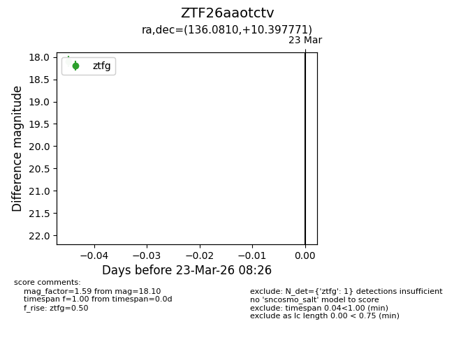
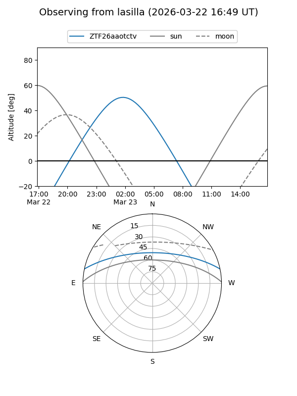
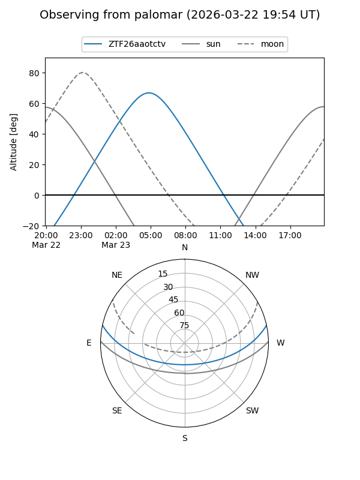

ZTF26aaotctv
Target ZTF26aaotctv at 2026-03-23 08:28
Aliases and brokers:
FINK: link
Lasair: link
ALeRCE: link
alt names
ZTF26aaotctv (ztf,fink_ztf)
Coordinates:
equatorial (ra, dec) = 136.0810,+10.39777
equatorial (HMS+DMS) = 09:04:19.44,+10:23:51.98
galactic (l, b) = (218.8364,+34.18687)
Flags:
Photometry:
last ztfg=18.10
1 ztfg detections
Lightcurve

Visibility


Additional plots